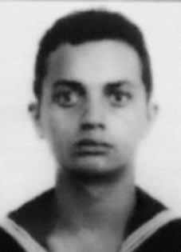

José
Manoel
da Silva
CIRCUNSTÂNCIAS DA MORTE
José Manoel foi morto, junto com outros cinco integrantes da VPR, entre os dias 8 e 9 de janeiro de 1973, no episódio conhecido como Massacre da Chácara São Bento, em operação conduzida pela equipe do delegado Sérgio Paranhos Fleury, do DOPS/SP, com a colaboração do ex-cabo José Anselmo dos Santos, que era dirigente da VPR e atuava como agente infiltrado. O “Cabo Anselmo” era controlado por Fleury e suas ações eram acompanhadas por agentes do Estado, tendo contribuído com a captura e morte de vários militantes políticos. No momento em que Anselmo articulou a emboscada contra os seis integrantes da VPR, com o objetivo de desmantelar o movimento de guerrilha urbana no Nordeste do Brasil, já havia fortes suspeitas, dentro da organização, quanto à sua atuação como agente infiltrado. A versão oficial, veiculada pela imprensa na época, registrava que os militantes tinham sido mortos durante um tiroteio travado com os agentes de segurança na Chácara São Bento. A partir de suposta delação de José Manoel da Silva, preso no dia 7 de janeiro, a polícia teria localizado o aparelho, onde seria realizado um congresso da VPR. O Ofício no 002/75-GAB/CI/DPF, de 17 de março de 1975, encaminhado pelo diretor do Centro de Informações do Departamento de Polícia Federal ao chefe da Agência Central do SNI, relatou que os militantes foram mortos “[…] à bala quando do desbaratamento de um Congresso Terrorista em Recife/PE, no dia 08-01- 73, no Município de Paulista no Loteamento São Bento […]”. i Pouco tempo depois do ocorrido, integrantes da VPR questionaram a versão divulgada e, em fevereiro de 1973, publicaram no Chile um pronunciamento no jornal Campanha, no qual afirmavam que a “Vanguarda Popular Revolucionária do Brasil não realizou tal congresso, que tal informação é um pretexto mentiroso para justificar o assassinato desses (6) seis lutadores da causa antifascista”. Na mesma declaração, responsabilizaram o “Cabo Anselmo” pela delação dos militantes de Pernambuco. Os órgãos de segurança registraram o pronunciamento da VPR na Informação no 217/DIS-COMZAE-4 do DEOPS/SP e a encaminharam à Divisão de Informações de Segurança da 4a Zona Aérea da Aeronáutica. ii Não obstante, a versão oficial foi mantida pelos Relatórios das FFAA enviados ao então ministro da Justiça, Maurício Corrêa, em dezembro de 1993. Sobre José Manoel, consta no Relatório da Marinha, “JAN/73, terrorista e agitador. Foi morto em Paulista/PE em 08/01/73, ao reagir a tiros à voz de prisão, dada pelos agentes de segurança”. iii As investigações realizadas pela CEMDP, pela CEMVDHC e pela CNV comprovaram que não houve tiroteio, que os militantes foram capturados em lugares e ocasiões diferentes e mortos sob tortura, de modo que o tiroteio foi somente uma encenação para justificar as mortes. Um primeiro indício da falsidade da versão oficial pode ser extraído do Exame de Perícia em Local de Ocorrência, elaborado em 9 de janeiro de 1973 pelo Instituto de Polícia Técnica, uma vez que não faz menção a marcas de projéteis nos cômodos em que foram encontradas as vítimas, com exceção da cozinha que, segundo consta no exame, “apresentava vários orifícios produzidos por projéteis de arma de fogo”. iv Não se sustenta, tampouco, a ideia de que o aparelho foi localizado a partir de delação de José Manoel. A operação de captura dos militantes pelos órgãos de segurança, sob o comando de Fleury, foi possível graças à atuação de “Cabo Anselmo” como agente duplo. Essa atuação é comprovada pelo Relatório de Paquera produzido pelo “Cabo Anselmo” e enviado ao DOPS/SP, em que relatava a rearticulação da VPR no Nordeste e o contato que estabeleceu com as vítimas antes da chacina, demonstrando a estreita vigilância policial a que estavam submetidos os militantes. v O relato de testemunhas confirma que os militantes tinham sido presos antes da chacina. Segundo as declarações de Nivaldo Martins da Silva, João Joaquim Nunes Filho e Ivo João Tavares, anexadas ao processo da CEMDP, José Manoel da Silva foi capturado no dia 7 de janeiro de 1973, em um posto de gasolina localizado na rodovia BR-104, próxima a Toritama (PE), por três pessoas que se diziam agentes da Polícia Federal, e transportado em uma Variant preta com o emblema do Instituto Nacional de Colonização e Reforma Agrária (Incra). Os demais militantes foram presos no dia seguinte, 8 de janeiro de 1973. Em depoimento à CEMVDHC, Jorge Barrett Viedma, irmão da Soledad e, na época, simpatizante da VPR, narrou que Pauline e Eudaldo dormiram no “aparelho” de Anselmo no dia 7 de janeiro e que, na manhã do dia seguinte, todos saíram para o centro de Recife em carro dirigido por Anselmo, sendo que Pauline e Soledad foram deixadas na boutique de Sonja Maria Cavalcanti de França Lócio, em Boa Viagem. Sonja Cavalcanti, proprietária da boutique Chica Boa, declarou à CEMDP, em 1996, que Pauline e Soledad foram capturadas em seu estabelecimento por cinco homens que se diziam policiais e estavam em um carro do Incra. Sonja relatou que a ação foi muito violenta, que os homens espancaram Pauline, acertando-a até com coronhadas, e que as duas mulheres foram levadas amarradas. vi Sonja também prestou depoimento à CEMVDHC, no qual reconheceu o delegado Sérgio Paranhos Fleury como um dos responsáveis pela captura de Soledad e Pauline em sua boutique. No mesmo dia em que elas foram capturadas, foram efetuadas as prisões de Eudaldo, de Jorge Barrett e sua esposa. Jorge Barrett relatou para a CEMVDHC que Fleury também participou da sua detenção. Houve, portanto, uma ação coordenada que resultou nas prisões, indicando que ao menos duas equipes atuaram na operação de cerco aos militantes. Ainda com relação à autoria, em depoimento prestado à CNV em 30 de outubro de 2012, o ex-sargento do Exército Marival Chaves afirmou que, além do informante Anselmo e do delegado Fleury, a operação que resultou na prisão e morte do grupo da VPR contou com a participação, pelo CIE, de José Brant Teixeira, Paulo Malhães, Félix Freire Dias e Rubens Gomes Carneiro (o Laecato). Também informou que a operação foi paga com recursos do CIE, com verbas descaracterizadas. No depoimento prestado em 1996, à CEMDP, a advogada Mércia de Albuquerque relatou que teve acesso aos corpos das vítimas no necrotério. A advogada relatou que “todos os corpos estavam muito estragados, com marcas de pancadas, cortes”. vii O Laudo de Inspeção Médico-Legal de Corpo registra que o cadáver de José Manoel estava em “completo estado de rigidez” e não registra as marcas de algemas ou de cordas nos seus pulsos, que podem ser observadas nas ilustrações fotográficas que acompanham o laudo. Embora os órgãos de segurança tivessem conhecimento da sua verdadeira identidade, José Manoel foi sepultado como indigente e com identidade desconhecida no cemitério da Várzea, em Recife (PE). Em 1975, com a ajuda do coveiro, a sua esposa, Genivalda, conseguiu resgatar seus ossos e enterrá-los, dentro de um saco plástico, perto de uma árvore na entrada do cemitério. Somente em março de 1995, os restos mortais foram retirados pela família e trasladados para Toritama, terra natal de José Manoel. A CEMVDHC está realizando investigações sobre o local em que foram mortos os militantes da VPR, com apoio do testemunho e da colaboração de Jorge Barrett. As investigações ainda estão em curso, mas levantam indícios no sentido de que os militantes teriam sido mortos sob tortura em aparelho situado em Abreu e Lima e identificado pelos integrantes da VPR como Sítio São Bento, e não no local indicado como a Granja São Bento, localizado em Paulista, que corresponde ao lugar tradicionalmente apontado como cenário das mortes. Segundo depoimento prestado por Jorge Barrett à CEMVDHC, havia um equipamento de recuo da VPR em Abreu e Lima, onde viviam Pauline e Eudaldo. Este aparelho era chamado pelos membros da organização de Sítio São Bento e deveria funcionar como um local para receber pessoas que estivessem em perigo de vida e para, eventualmente, levar futuros sequestrados. Em razão da suspeita de identificação do local pela repressão, Pauline e Eudaldo teriam ido para outro equipamento situado em Rio Doce, onde era o aparelho de Soledad e de “Cabo Anselmo”. A partir dessas informações, a CEMVDHC tem trabalhado com a possibilidade, ainda não confirmada, de o aparelho em Abreu e Lima ter sido o local das mortes. No depoimento prestado, Jorge Barrett sugere que a Granja São Bento, apontada oficialmente como local da chacina, teria sido utilizada pela repressão para a encenação das mortes, mas não corresponderia ao aparelho mantido pela VPR. Essa hipótese ganhou força após um trabalho de reconhecimento feito pela CEMVDHC em parceria com Jorge Barrett, que conseguiu identificar o local do Sítio São Bento. Testemunhos colhidos de moradores da região reforçam essa hipótese, uma vez que eles se recordam do local como “Sítio dos Cabeludos” e relatam ter presenciado os militantes levados amarrados, bem como os corpos retirados em redes. No momento em que a CNV encerra as suas atividades, encontra-se em andamento um trabalho pericial realizado pela polícia científica de Pernambuco para avançar na identificação do local em confronto com os laudos e fotografias da época. Portanto, os resultados parciais das investigações conduzidas pela CEMVDHC apresentam indícios que apontam para a possibilidade de os militantes terem sido capturados em locais e momentos distintos e levados ao equipamento de recuo da VPR situado em Abreu e Lima, chamado Sítio São Bento, possivelmente para fazer o reconhecimento do local, onde teriam sido torturados e mortos, inclusive Evaldo que, pela versão oficial, teria fugido e, no dia seguinte, localizado e morto em Olinda.
José Manoel was killed, along with five other members of the VPR, between the 8th and 9th of January 1973, in the episode known as the Chácara São Bento Massacre, in an operation conducted by the team of delegate Sérgio Paranhos Fleury, from DOPS/SP, with the collaboration of former corporal José Anselmo dos Santos, who was a leader of the VPR and acted as an undercover agent. “Cabo Anselmo” was controlled by Fleury and his actions were monitored by State agents, having contributed to the capture and death of several political activists. At the time Anselmo organized the ambush against the six members of the VPR, with the aim of dismantling the urban guerrilla movement in the Northeast of Brazil, there were already strong suspicions within the organization regarding his role as an infiltrated agent. The official version, published by the press at the time, recorded that the militants had been killed during a shootout with security agents at Chácara São Bento. Based on an alleged statement from José Manoel da Silva, arrested on January 7th, the police allegedly located the device, where a VPR congress was to be held. Letter no. 002/75-GAB/CI/DPF, dated March 17, 1975, forwarded by the director of the Information Center of the Federal Police Department to the head of the SNI Central Agency, reported that the militants were killed “[…] by gunshot during the disruption of a Terrorist Congress in Recife/PE, on 01/08/73, in the Municipality of Paulista in the São Bento Subdivision […]”. i Shortly after the incident, members of the VPR questioned the published version and, in February 1973, published a statement in Chile in the newspaper Campanha, in which they stated that the “Vanguarda Popular Revolucionária do Brasil did not hold such a congress, that such information is a false pretext to justify the murder of these (6) six fighters for the anti-fascist cause”. In the same statement, they held “Corporal Anselmo” responsible for the denunciation of the Pernambuco militants. The security bodies recorded the VPR's statement in Information no. 217/DIS-COMZAE-4 of DEOPS/SP and forwarded it to the Security Information Division of the 4th Air Zone of the Aeronautics. ii Nevertheless, the official version was maintained by the FFAA Reports sent to the then Minister of Justice, Maurício Corrêa, in December 1993. About José Manoel, it is stated in the Navy Report, “JAN/73, terrorist and agitator. He was killed in Paulista/PE on 01/08/73, when he reacted to the arrest voice given by security agents”. iii The investigations carried out by CEMDP, CEMVDHC and CNV proved that there was no shooting, that the militants were captured in different places and occasions and died under torture, so that the shooting was just an act to justify the deaths. A first indication of the falsity of the official version can be extracted from the Examination of Expertise at the Place of Occurrence, prepared on January 9, 1973 by the Technical Police Institute, since it makes no mention of bullet marks in the rooms where the victims were found, with the exception of the kitchen which, according to the examination, “presented several holes produced by firearm projectiles”. iv The idea that the device was located based on José Manoel's statement is not supported either. The operation to capture the militants by the security agencies, under the command of Fleury, was possible thanks to the role of “Corporal Anselmo” as a double agent. This action is proven by the Flirting Report produced by “Corporal Anselmo” and sent to the DOPS/SP, in which it reported the rearticulation of the VPR in the Northeast and the contact it established with the victims before the massacre, demonstrating the close police surveillance to which the militants were subjected. v Witness reports confirm that the militants had been arrested before the massacre. According to the statements of Nivaldo Martins da Silva, João Joaquim Nunes Filho and Ivo João Tavares, attached to the CEMDP process, José Manoel da Silva was captured on January 7, 1973, at a gas station located on the BR-104 highway, close to Toritama (PE), by three people claiming to be agents of the Federal Police, and transported in a black Variant with the emblem of the National Institute of Colonization and Agrarian Reform (Incra). The other militants were arrested the following day, January 8, 1973. In a statement to CEMVDHC, Jorge Barrett Viedma, Soledad's brother and, at the time, a VPR sympathizer, said that Pauline and Eudaldo slept in Anselmo's “apparatus” on January 7 and that, on the morning of the following day, they all left for the center of Recife in a car driven by Anselmo, with Pauline and Soledad being left at the boutique of Sonja Maria Cavalcanti de França Lócio, in Boa Viagem. Sonja Cavalcanti, owner of the Chica Boa boutique, told CEMDP in 1996 that Pauline and Soledad were captured in her establishment by five men who claimed to be police officers and were in an Incra car. Sonja reported that the action was very violent, that the men beat Pauline, even hitting her with butts, and that the two women were taken away tied up. vi Sonja also gave a statement to CEMVDHC, in which she recognized delegate Sérgio Paranhos Fleury as one of those responsible for capturing Soledad and Pauline in her boutique. On the same day they were captured, Eudaldo, Jorge Barrett and his wife were arrested. Jorge Barrett reported to CEMVDHC that Fleury also participated in his arrest. There was, therefore, a coordinated action that resulted in the arrests, indicating that at least two teams were involved in the operation to surround the militants. Still regarding authorship, in a statement given to the CNV on October 30, 2012, former Army sergeant Marival Chaves stated that, in addition to the informant Anselmo and delegate Fleury, the operation that resulted in the arrest and death of the VPR group included the participation, by the CIE, of José Brant Teixeira, Paulo Malhães, Félix Freire Dias and Rubens Gomes Carneiro (Laecato). He also reported that the operation was paid for with CIE resources, with uncharacterized funds. In her statement given in 1996 to CEMDP, lawyer Mércia de Albuquerque reported that she had access to the bodies of the victims in the morgue. The lawyer reported that “all the bodies were very damaged, with marks of blows and cuts”. vii The Medico-Legal Body Inspection Report records that José Manoel's corpse was in a “complete state of rigidity” and does not record the marks of handcuffs or ropes on his wrists, which can be seen in the photographic illustrations that accompany the report. Although security agencies were aware of his true identity, José Manoel was buried as a pauper and with an unknown identity in the Várzea cemetery, in Recife (PE). In 1975, with the help of the gravedigger, his wife, Genivalda, managed to rescue his bones and bury them, inside a plastic bag, near a tree at the entrance to the cemetery. Only in March 1995, the remains were removed by the family and transferred to Toritama, José Manoel's hometown. CEMVDHC is carrying out investigations into the place where the VPR militants were killed, with the support of the testimony and collaboration of Jorge Barrett. The investigations are still ongoing, but they raise signs that the militants were killed under torture in a device located in Abreu e Lima and identified by VPR members as Sítio São Bento, and not in the location indicated as Granja São Bento, located in Paulista, which corresponds to the place traditionally identified as the scene of the deaths. According to a statement given by Jorge Barrett to CEMVDHC, there was VPR retreat equipment in Abreu e Lima, where Pauline and Eudaldo lived. This device was called Sítio São Bento by members of the organization and was supposed to function as a place to receive people who were in danger of their lives and to, eventually, take future kidnapped people. Due to the suspected identification of the location by repression, Pauline and Eudaldo would have gone to another equipment located in Rio Doce, where Soledad and “Cabo Anselmo” were located. Based on this information, CEMVDHC has been working with the possibility, not yet confirmed, that the device in Abreu e Lima was the location of the deaths. In the statement given, Jorge Barrett suggests that Granja São Bento, officially identified as the location of the massacre, would have been used by repression to stage the deaths, but would not correspond to the apparatus maintained by the VPR. This hypothesis gained strength after reconnaissance work carried out by CEMVDHC in partnership with Jorge Barrett, who managed to identify the location of Sítio São Bento. Testimonies collected from residents of the region reinforce this hypothesis, since they remember the place as “Sítio dos Cabeludos” and report having witnessed the militants taken tied up, as well as the bodies removed in nets. At the time that the CNV closes its activities, expert work is underway by the scientific police of Pernambuco to advance the identification of the location in comparison with reports and photographs from the time. Therefore, the partial results of the investigations conducted by CEMVDHC present evidence that points to the possibility that the militants were captured in different places and times and taken to the VPR retreat equipment located in Abreu e Lima, called Sítio São Bento, possibly to reconnoitre the place, where they were tortured and killed, including Evaldo who, according to the official version, would have fled and, the following day, located and killed in Olinda.
José Manoel fue asesinado, junto con otros cinco miembros del VPR, entre el 8 y el 9 de enero de 1973, en el episodio conocido como Masacre de Chácara São Bento, en una operación realizada por el equipo del delegado Sérgio Paranhos Fleury, del DOPS/SP, con la colaboración del ex cabo José Anselmo dos Santos, que era dirigente del VPR y actuaba como agente encubierto. “Cabo Anselmo” estaba controlado por Fleury y sus acciones eran monitoreadas por agentes del Estado, habiendo contribuido a la captura y muerte de varios activistas políticos. Cuando Anselmo organizó la emboscada contra los seis miembros del VPR, con el objetivo de desmantelar la guerrilla urbana en el Nordeste de Brasil, ya existían fuertes sospechas dentro de la organización sobre su papel como agente infiltrado. La versión oficial, publicada por la prensa de la época, registraba que los militantes habían sido asesinados durante un tiroteo con agentes de seguridad en Chácara São Bento. Con base en una supuesta declaración de José Manoel da Silva, detenido el 7 de enero, la policía habría localizado el dispositivo, donde se iba a realizar un congreso de la VPR. Carta no. 002/75-GAB/CI/DPF, de 17 de marzo de 1975, remitido por el director del Centro de Información del Departamento de la Policía Federal al jefe de la Agencia Central SNI, informó que los militantes fueron asesinados “[…] por disparos durante la disrupción de un Congreso Terrorista en Recife/PE, el 08/01/73, en el Municipio de Paulista en el Barrio São Bento […]”. i Poco después del incidente, miembros del VPR cuestionaron la versión publicada y, en febrero de 1973, publicaron un comunicado en Chile en el diario Campanha, en el que afirmaban que la “Vanguarda Popular Revolucionária do Brasil no celebró tal congreso, que tal información es un pretexto falso para justificar el asesinato de estos (6) seis luchadores por la causa antifascista”. En el mismo comunicado responsabilizaron al “cabo Anselmo” por la denuncia de los militantes pernambucanos. Los cuerpos de seguridad dejaron constancia de la declaración de la VPR en el Informativo nro. 217/DIS-COMZAE-4 del DEOPS/SP y remitido a la División de Información de Seguridad de la 4ª Zona Aérea de la Aeronáutica. ii Sin embargo, la versión oficial fue mantenida por los Informes de las FFAA enviados al entonces Ministro de Justicia, Maurício Corrêa, en diciembre de 1993. Sobre José Manoel, está indicado en el Informe de la Marina, "ENE/73, terrorista y agitador. Fue asesinado en Paulista/PE el 08/01/73, cuando reaccionó a la voz de arresto dada por agentes de seguridad". iii Las investigaciones realizadas por el CEMDP, el CEMVDHC y la CNV demostraron que no hubo disparos, que los militantes fueron capturados en diferentes lugares y ocasiones y murieron bajo tortura, por lo que el disparo fue sólo un acto para justificar las muertes. Un primer indicio de la falsedad de la versión oficial se puede extraer del Examen de Peritaje en el Lugar del Suceso, elaborado el 9 de enero de 1973 por el Instituto Técnico de Policía, ya que no hace mención de huellas de bala en las habitaciones donde fueron encontradas las víctimas, con excepción de la cocina que, según el examen, “presentaba varios orificios producidos por proyectiles de arma de fuego”. iv Tampoco se sustenta la idea de que el dispositivo fue localizado con base en la declaración de José Manoel. La operación de captura de los militantes por parte de los organismos de seguridad, al mando de Fleury, fue posible gracias al papel del “cabo Anselmo” como agente doble. Esta acción está probada por el Informe de Coqueteo elaborado por el “Cabo Anselmo” y enviado al DOPS/SP, en el que relataba la rearticulación del VPR en el Nordeste y el contacto que estableció con las víctimas antes de la masacre, demostrando la estrecha vigilancia policial a la que fueron sometidos los militantes. v Los informes de los testigos confirman que los militantes habían sido arrestados antes de la masacre. Según declaraciones de Nivaldo Martins da Silva, João Joaquim Nunes Filho e Ivo João Tavares, adjuntos al proceso CEMDP, José Manoel da Silva fue capturado el 7 de enero de 1973, en una gasolinera ubicada en la carretera BR-104, cerca de Toritama (PE), por tres personas que decían ser agentes de la Policía Federal, y transportado en una variante negra con el emblema del Instituto Nacional de Colonización y Reforma Agraria. (Incra). Los demás militantes fueron detenidos al día siguiente, el 8 de enero de 1973. En declaraciones al CEMVDHC, Jorge Barrett Viedma, hermano de Soledad y entonces simpatizante del VPR, dijo que Pauline y Eudaldo durmieron en el “aparato” de Anselmo el 7 de enero y que, en la mañana del día siguiente, salieron todos hacia el centro de Recife en un automóvil conducido por Anselmo, con Pauline y Soledad quedan en la boutique de Sonja Maria Cavalcanti de França Lócio, en Boa Viagem. Sonja Cavalcanti, propietaria de la boutique Chica Boa, dijo al CEMDP en 1996 que Pauline y Soledad fueron capturadas en su establecimiento por cinco hombres que decían ser policías y se encontraban en un automóvil Incra. Sonja denunció que la acción fue muy violenta, que los hombres golpearon a Pauline, incluso a culazos, y que las dos mujeres se las llevaron atadas. vi Sonja también brindó una declaración al CEMVDHC, en la que reconoció al delegado Sérgio Paranhos Fleury como uno de los responsables de capturar a Soledad y Pauline en su boutique. El mismo día de su captura fueron detenidos Eudaldo, Jorge Barrett y su esposa. Jorge Barrett informó al CEMVDHC que Fleury también participó en su detención. Hubo, por tanto, una acción coordinada que se saldó con las detenciones, lo que indica que al menos dos equipos estaban involucrados en el operativo para cercar a los militantes. Aún en cuanto a la autoría, en declaración dada a la CNV el 30 de octubre de 2012, el ex sargento del Ejército Marival Chaves afirmó que, además del informante Anselmo y del delegado Fleury, la operación que resultó en la detención y muerte del grupo VPR contó con la participación, por parte del CIE, de José Brant Teixeira, Paulo Malhães, Félix Freire Dias y Rubens Gomes Carneiro (Laecato). También informó que la operación fue costeada con recursos del CIE, con fondos no caracterizados. En su declaración dada en 1996 al CEMDP, la abogada Mércia de Albuquerque informó que tuvo acceso a los cuerpos de las víctimas en la morgue. El abogado informó que “todos los cuerpos estaban muy dañados, con marcas de golpes y cortes”. vii El Informe de Inspección Corporal Médico Legal registra que el cadáver de José Manoel se encontraba en “completo estado de rigidez” y no registra marcas de esposas o cuerdas en sus muñecas, las cuales se pueden apreciar en las ilustraciones fotográficas que acompañan el informe. Aunque los organismos de seguridad conocían su verdadera identidad, José Manoel fue enterrado como indigente y con identidad desconocida en el cementerio de Várzea, en Recife (PE). En 1975, con la ayuda del sepulturero, su esposa, Genivalda, logró rescatar sus huesos y enterrarlos, dentro de una bolsa de plástico, cerca de un árbol a la entrada del cementerio. Recién en marzo de 1995 los restos fueron retirados por la familia y trasladados a Toritama, ciudad natal de José Manoel. El CEMVDHC realiza investigaciones en el lugar donde fueron asesinados los militantes del VPR, con el apoyo del testimonio y la colaboración de Jorge Barrett. Las investigaciones aún están en curso, pero arrojan indicios de que los militantes fueron asesinados bajo tortura en un dispositivo ubicado en Abreu e Lima e identificado por miembros del VPR como Sítio São Bento, y no en el lugar indicado como Granja São Bento, ubicada en Paulista, que corresponde al lugar tradicionalmente identificado como el escenario de las muertes. Según declaración de Jorge Barrett al CEMVDHC, había equipos de retiro de VPR en Abreu e Lima, donde vivían Pauline y Eudaldo. Este dispositivo fue denominado Sítio São Bento por miembros de la organización y debía funcionar como un lugar para recibir a personas que estuvieran en peligro de muerte y, eventualmente, acoger a futuros secuestrados. Debido a la sospecha de identificación del lugar por la represión, Pauline y Eudaldo se habrían dirigido a otro equipo ubicado en Rio Doce, donde se encontraban Soledad y “Cabo Anselmo”. Con base en esta información, el CEMVDHC viene trabajando con la posibilidad, aún no confirmada, de que el artefacto en Abreu e Lima fuera el lugar de las muertes. En su declaración, Jorge Barrett sugiere que la Granja São Bento, oficialmente identificada como el lugar de la masacre, habría sido utilizada por la represión para escenificar las muertes, pero no correspondería al aparato mantenido por el VPR. Esta hipótesis cobró fuerza después de un trabajo de reconocimiento realizado por el CEMVDHC en colaboración con Jorge Barrett, que logró identificar la ubicación del Sítio São Bento. Testimonios recogidos de vecinos de la región refuerzan esta hipótesis, ya que recuerdan el lugar como “Sítio dos Cabeludos” y relatan haber presenciado a los militantes llevados atados, así como los cuerpos retirados en redes. En el momento en que la CNV cierra sus actividades, la policía científica de Pernambuco realiza peritajes para avanzar en la identificación del lugar en comparación con informes y fotografías de la época. Por lo tanto, los resultados parciales de las investigaciones realizadas por el CEMVDHC presentan evidencias que apuntan a la posibilidad de que los militantes fueron capturados en diferentes lugares y tiempos y conducidos al equipo de retiro de la VPR ubicado en Abreu e Lima, llamado Sítio São Bento, posiblemente para reconocer el lugar donde fueron torturados y asesinados, incluido Evaldo que, según la versión oficial, habría huido y, al día siguiente, localizado y asesinado en Olinda.